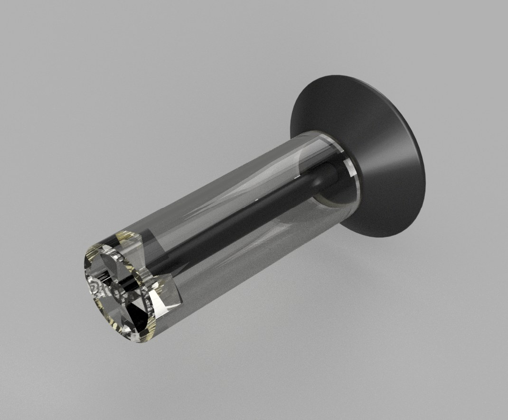

Featured project
Twist-Cap Salt Shaker
A four-part condiment dispenser with one functional requirement: twisting the cap turns an internal blade that pushes the condiment out of the container. I modeled each part, assembled them with joints, produced a dimensioned drawing for every component, and created renders and an exploded-view animation.
- Course
- RAS 210: CAD/CAM
- Date
- Mar – May 2026
- Software
- Autodesk Fusion
- My role
- Individual project
- Status
- CAD assembly, technical drawings, renders
View full case study
Objective
Design a condiment dispenser that can be used in restaurants or households, where twisting the cap on top turns a blade that forces the condiment out of the container. The product has four parts: the container, the cap, the connecting rod, and the blade.
My contribution and process
- Blade: modeled with an extrude and a rectangular pattern for symmetry, using fillets instead of complex curves.
- Cap: created with a revolve from a 2D profile, with fillets to smooth the edges.
- Connecting rod: a cylindrical extrusion with parametric dimensions, so its length can be adjusted easily.
- Container: given a transparent appearance so the internal parts are visible; the interior was intentionally simplified (no threads or detailed seals).
Assembly and joints
I brought the four parts into a Fusion assembly as linked components and connected them with three joints: a rigid joint from the cap to the connecting rod, a rigid joint from the rod to the blade, and a revolute joint between the blade and the bottom of the container. In the simulated assembly, twisting the cap rotates the blade.
GD&T analysis
As part of the project, I identified which geometric controls would matter if the design were produced: flatness on the cap face, position on the blade features, concentricity between the shaft, cap, and blade hub, perpendicularity of the shaft, cylindricity of the shaft, and runout.
Key choice: position on the blade features. If the blades are not positioned accurately, the assembly becomes unbalanced, which affects efficiency and can cause shaking at higher speeds.
Technical drawings
I produced a dimensioned multiview drawing with an isometric view for each part, using Fusion's drawing workspace.
Outcome and learning
The deliverable was a four-part CAD assembly with joints, four dimensioned drawings, renders, an exploded-view animation, and a final presentation. The main lesson was how keeping part geometry simple, using fillets instead of complex surfacing and a simplified container interior, made the parts easier to fit together cleanly in the assembly.